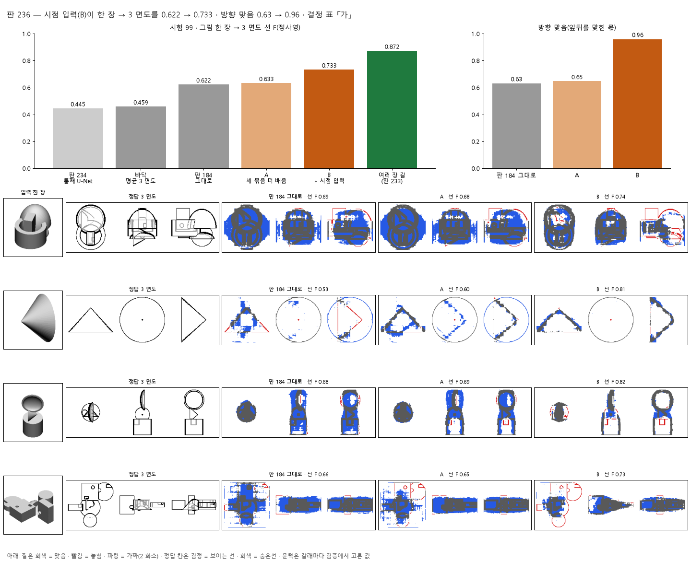

m1_tr0236_h001_질의디코더
tr184 꼴(얼린 DINOv2 + 질의 토큰 디코더)을 우리 렌더 세 묶음으로 더 배우고(A) 시점 입력까지 더하면(B), 그림 한 장 → 3 면도 시험 선 F 가 tr184 그대로보다 오르나?
판정 · 가 — 시험 정사영 한 장 3 면도 선 F tr184 그대로 0.622 · A 0.633 · B 0.733(B − A +0.100 · B − tr184 +0.111) · 방향 맞음 0.63 · 0.65 · 0.96 · 무너짐 없음 · 베끼기 없음 · 단 그림은 선이 아니라 덩어리 → B 꼴 위에 다음(선 가늘게 먼저)
분석
한 줄로
물음: tr184 꼴(얼린 DINOv2 + 질의 토큰 디코더)을 우리 렌더 세 묶음으로 더 배우고(A) 시점 입력까지 더하면(B), 그림 한 장 → 3 면도 시험 선 F 가 tr184 그대로보다 오르나?
답: 시점 입력이 크게 돕는다(결정 표 「가」). B 는 0.733 으로 tr184 그대로(0.622)보다 +0.111, A(0.633)보다 +0.100 이다. 앞뒤를 맞히는 몫이 0.63 → 0.96 으로 뛰었다. 다만 그림을 보면 선이 아니라 굵은 덩어리로 그린다.
왜 이 판을 했나
통째 U-Net(tr234 · 235)은 입력 선을 베끼거나 평균 그림으로 숨어 바닥(0.459)도 못 넘었다. tr184(질의 디코더)가 0.608 로 가장 높아서, 사용자가 「tr184 꼴 키우기」를 골랐다. tr184 는 시점을 모른 채 배웠다.
바꾼 것 하나
A 는 tr184 무게에서 우리 렌더 세 묶음(정사영 · 원근 · 축 시점)으로 더 배웠다. B 는 A 와 같고, 시점(방위 · 고도 · 원근 여부 · 눈 거리)을 질의 192 개에 FiLM 으로 넣었다(처음엔 0 이라 A 와 같음). A 는 GPU 0 · B 는 GPU 1 에서 나란히 돌았다.
결과

| 시험 99 · 한 장 | tr184 그대로 | A | B | 바닥 | 여러 장 길 |
|---|---|---|---|---|---|
| 3 면도 선 F · 정사영 | 0.622 | 0.633 | 0.733 | 0.459 | 0.872 |
| 원근 · 축 시점 | 0.599 · 0.530 | 0.625 · 0.589 | 0.733 · 0.689 | ||
| 방향 맞음(정사영) | 0.63 | 0.65 | 0.96 | ||
| 다양성(정답 0.666) | 0.404 | 0.391 | 0.524 | ||
| 베끼기 F(정답 0.460) | 0.498 | 0.505 | 0.512 |
- 검증 곡선: A 는 2,000 스텝 0.643 에서 평평해 5,000 에서 멈췄다. B 는 상한 12,000 까지 계속 올랐다(0.645 → 0.729).
왜 이렇게 나왔나
확인한 것
- 시점을 모르면 물체의 앞뒤를 63 % 만 맞힌다. 시점을 넣으면 96 % 다. 오른 몫의 대부분이 방향이다.
- 세 묶음으로 더 배우기만 한 A 는 정사영 +0.01 · 축 시점 +0.06 으로, 축 시점 그림을 배운 만큼만 올랐다.
- 질의 디코더는 베끼지 않는다(베끼기 F 0.51 ≈ 정답 0.46). tr234 U-Net(0.76)과 다르다.
- 그림에서 세 갈래 모두 선이 아니라 칠한 덩어리(회색 + 파랑)를 그린다. 2 화소 자는 덩어리가 선을 덮으면 맞음으로 쳐서 숫자가 덩어리를 덜 벌한다.
짐작 (아직 확인 안 함)
- 질의 하나가 16 × 16 화소 조각을 통째로 내서 선이 굵게 번진다. tr184 손실(양성 무게 5)도 굵게 그리는 쪽을 민다.
한계
- 시험 99 · 씨앗 하나 · B 는 상한에서 끊김(더 오를 여지).
- 덩어리 그림은 3 면도로 쓰기 어렵다. 숫자 0.733 을 「선을 잘 그린다」로 읽으면 안 된다.
배운 것과 다음
한 장 → 3 면도에서 시점 입력은 필수다(앞뒤 0.63 → 0.96 · F +0.11). 다만 지금 그림은 선이 아니라 덩어리다.
- 결정 표 「가」: B 꼴 위에 다음 — 먼저 선을 가늘게(질의 출력 해상도 · 손실), 그다음 DA 깊이 · 사진 섞기 · 더 길게.
- 같은 표: 바닥 0.459 · tr234 0.445 · tr184 0.622 · A 0.633 · B 0.733 · 여러 장 0.872.
판 기록
- 카드 · 코드 a2abc67 · A GPU 0(5,000 스텝 · 20 분) · B GPU 1(12,000 스텝 · 60 분) · 시험 GPU 1
- 학습 보기: 모델236/A · B/넘겨보기.html